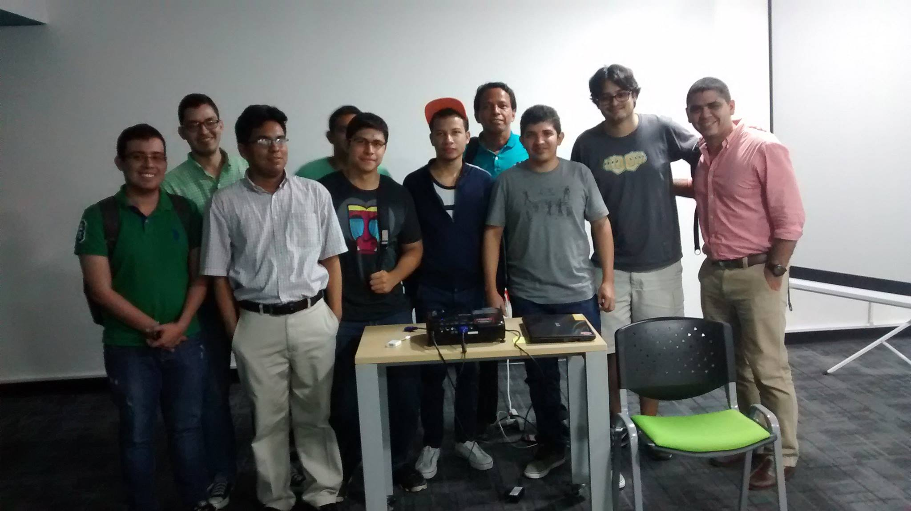
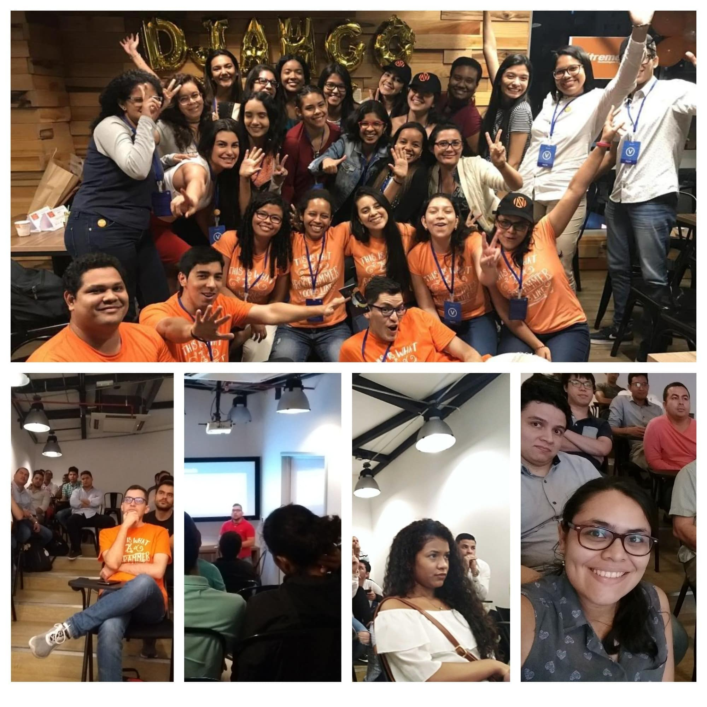
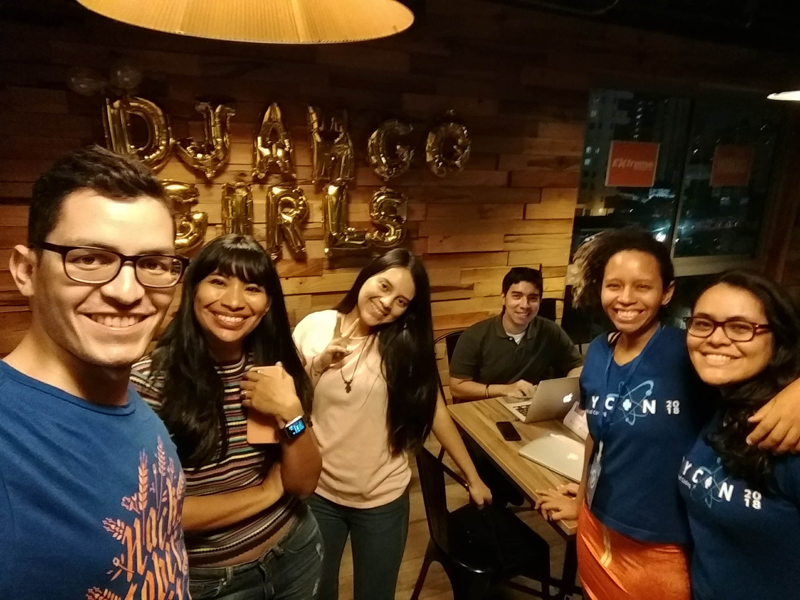

Hace años he querido hacer un artículo conmemorativo de todos estos años en que la comunidad ha funcionado en Barranquilla. Esta es mi intención de resumir los eventos más importantes en estos 8 años, lo cual viene a ser una tarea para nada fácil, teniendo en cuenta todas las anécdotas y aventuras que hemos vivido.
2014: El inicio

A pesar de que la comunidad empezó en 2015, su historia empieza a crearse un año antes, cuando empecé a asistir a eventos de tecnología en Barranquilla. Mi primer evento fue Ignite BAQ creado por la compañía Ideaware (quien diría que en un futuro nos patrocinarían un evento Django Girls y el primer evento HacktoberFest Barranquilla).
Como comenté en el minuto 3:42 de mi charla en PyCon Colombia 2019 "Creando comunidades de tecnología exitosas", fue ahí donde conocí a las primeras personas que hoy en día son los primeros miembros de la comunidad de Python Barranquilla. Muchas gracias muchachos por el apoyo.
2015: ¡Somos Django Barranquilla!

El primer nombre que tuvimos fue Django Barranquilla, pues el marco de trabajo Django era el hilo conductor que nos unía y marcaba el propósito para reunirnos. Gracias a ese primer acercamiento con djangonautas en 2014 y con la ayuda de Jose Luis logramos conectar con el coworking AreaDos, administrado por Koombea (empresa que hasta el día de hoy nos patrocina con el lugar de eventos).
En 2015 múltiples comunidades verían la luz gracias a este espacio de trabajo, como lo fue Ruby BAQ. Gracias a mi asistencia a una de sus reuniones, fue que logré ganar la motivación para organizar el primer meetup de Django (y obviamente Python)
A destacar en este año:
- Logramos los primeros 10 asistentes regulares. Esto fue bueno porque logramos adquirir frecuencia.
- Hicimos 18 eventos en el año.
- En algunos meses hicimos 2 eventos al mes.
- No teníamos patrocinadores, así que hacíamos la famosa "vaca" para recoger el dinero de las pizzas (este año nos decidimos por las pizzas de Domino's por su filosofía de entregar las pizzas en 30 minutos)
2016: 쯏 si se llaman Python Barranquilla?
Iniciamos el 2016 con todas las expectativas del mundo. Del año anterior aprendimos que aumentar la frecuencia a dos eventos por mes no nos traería más público, así que este fue el primer año que empezamos apenas a pensar en la necesidad de hacer publicidad en redes sociales.
Este fue el año que empecé a contactarme con otros líderes de comunidades del país como Jhon Roa (chief organizer PyCon Colombia) y Gonzalo Peña (Python Bucaramanga). Gracias a ello, empecé a colaborar con Jhon Roa y su equipo de voluntarios para crear el primer evento estilo PyCon (por las iniciales en inglés de PYthon CONference) en Colombia.
Este año tuvimos dos eventos que marcaron a la comunidad. El primero fue mi primer viaje a Japón y el segundo fue el fin de AreaDos como espacio de trabajo. De aquí me surgirían todas las dudas del mundo:
- 쯈uién organizaría la comunidad durante mi viaje?
- 쮺칩mo conseguiríamos ponentes? (todavía me hago esta pregunta jajaja)
- 쮺칩mo conseguiríamos un nuevo lugar de eventos?
Todos estos obstáculos los tendría que sortear la comunidad por ella misma, sin mi presencia como líder organizador 😱
Este año también coincidió con mi primer trabajo con Python en la empresa Piensa Labs. Sin saberlo, esto tuvo gran repercusión en la comunidad de Python:
- Piensa Labs se convertiría en nuestro nuevo lugar de eventos.
- La empresa pasó a convertirse en uno de los mayores patrocinadores de la primera PyCon Colombia en 2017.
Por el lado de la organización, los compañeros de comunidad César y Leonardo se encargaron de mantener la comunidad activa, dando ellos mismos charlas y conectando con universidades (Universidad de la Costa, CUC y Universidad Santo Tomás).
A destacar:
- El fin de AreaDos como espacio de trabajo. Era un gran lugar, es una lástima.
- Hicimos 12+1 eventos este año (el de Lektor se repitió 1 vez por lluvia)
- La comunidad continuó a pesar de que estuve fuera de la ciudad por 6 meses, ¡ya tenía vida propia!
- Tuvimos los primeros acercamientos con la red de Python Colombia y con universidades. Fueron ellos quienes nos propusieron cambiarnos de nombre.
- Este año surge la tradición de celebrar cada año nuevo, en el primer mes del año.
- Se realiza el primer commit para la landing page de djangoquilla.com
2017: Ché, 쯤uerés hacer un Django Girls Barranquilla?
Este año, a mi regreso a Colombia, me entero de que Koombea tiene un edificio propio que incluye un teatrino. Lo fui a visitar y ¡era espectacular! Esta visita marcó el reinicio de nuestra colaboración con la empresa para realizar los eventos.
Por cierto, hasta este punto, todo el mundo pensaba que yo era empleado de Koombea jajaja. Algunas personas supongo que todavía lo piensan (el mes pasado me preguntaron jejeje).
Este año marcó un antes y después para toda la red de Python Colombia. Fue la primera PyCon Colombia y ello trajo un impulso sin precedentes en la red de comunidades. Para nosotros significo tener contacto presencial con ponentes de talla internacional tanto en la ciudad donde fue el evento como en la misma Barranquilla.
Gracias al trabajo de Manuel Kaufmann (más conocido como @humitos) y Johanna Sanchez (@ellaquimica) con Argentina en Python, fue que nos adentramos en el mundo de Django Girls. Manuel nos contactó inicialmente porque venía adelantando el proyecto de hacer múltiples eventos en Latinoamérica, como embajador de la PSF (quienes lo financiaron). Tras tres meses de arduo trabajo y entrenamiento, fue que pudimos hacer el primer evento de Django Girls Barranquilla 2017.
Contamos también con la visita de mentores y mentoras de toda Colombia y con nuestro primer ponente argentino. Pueden leer más sobre el evento en mis memorias sobre el primer Django Girls Barranquilla. Fue tal el impulso, que ese mismo año en octubre decidimos hacer el primer Django Girls Cartagena, y de esta forma, entrenar un equipo de organizadoras Django Girls en "La Heroica".
Gracias a los eventos Django Girls, la comunidad local creció de manera significativa. Todo esto debido a nuestra exposición en diferentes medios (salimos en radio y periódicos de la ciudad), al contacto con universidades y corporaciones educativas.
A destacar de este año:
- Asistencia a la primera PyCon Colombia
- Primer Django Girls Barranquilla y primer Django Girls Cartagena.
- Creación de la página web con Lektor. Éste fue el primer post
- Tuvimos nuestra primera charla de Machine Learning de la mano de Wayner. Parecía que Wayner nos hablaba en chino en ese evento jeje. En esa época se hablaba poco de IA.
- Hicimos evento en corporaciones educativas como CEIPA y CUES.
- Hicimos 16 eventos al año (sin incluir el de Cartagena).
📸 Revive el evento de Django Girls Barranquilla 2017 con las fotos del evento
📸 Revive el evento de Django Girls Cartagena 2017 con las fotos del evento
2018: Primer Hacktoberfest Barranquilla

Este fue el año de "meterle más diseño" a las imágenes de los eventos. Gracias a todo el impulso que tuvimos en 2017, nos tocó volver a pensar la forma como se promocionaban los eventos (hasta antes de Django Girls recuerdo que solo usábamos el voz a voz).
Este año empezamos a experimentar el hacer 2 charlas por evento con el formato de la PyCon Colombia. De esta forma, también ayudaríamos a entrenar a personas como ponentes. Todo esto rindió sus frutos porque luego este año contamos con la participación de varios de nuestros miembros como ponentes y talleristas de PyCon Colombia 2018.
Algo a notar es que 2 charlas al mes significaba el doble de esfuerzo en motivar y encontrar personas dispuestas en compartir conocimiento. Este ha sido y será el mayor reto que tenemos mes a mes.
Este año hicimos un nuevo Django Girls Barranquilla 2018 por nuestra propia cuenta en las instalaciones de Koombea. Hasta este punto, todavía dependíamos de la ayuda de Argentina en Python para promocionar el evento en su página web.
Uno de los momentos más chéveres y retadores del año fue trabajar con las comunidades tecnológicas barranquilleras de la época para celebrar Hacktoberfest 2018, una iniciativa de Github y otras compañías internacionales para promocionar la contribución al código abierto. En octubre 20 de 2018 hicimos nuestro crossover épico (al mejor estilo power rangers) con las comunidades:
- BaqJS
- Pioneras dev
- Fullstack Labs
- Barranquilla Analítica
La idea fue tener una tarde amena llena de charlas, código, pizzas y por supuesto, cerveza.
A destacar del 2018:
- Primera celebración de Hacktoberfest en Barranquilla
- Empezamos a hacer imágenes para promocionar los eventos de la comunidad.
- Realizamos 12+1 eventos al año.
- Se empieza a crear el "PyBAQ team" por sugerencias de Manuel. Ingresan a la comunidad y al equipo varias Django Girls que participaron en el 2017.
- Este año las charlas estuvieron muy inclinadas a temas de ciencias de datos e inteligencia artificial.
- Tuvimos la primera charla sobre seguridad informática.
- Revive el evento de Django Girls Barranquilla. Aquí verás las fotos del evento
2019: Nos patrocina la Python Software Foundation
Este año tiene gran relevancia para nosotros, porque oficialmente estuvimos patrocinados por la PSF (siglas de Python Software Foundation). Si quieren saber más sobre la PSF, les dejo esta charla de Manuel Kaufmann sobre 쯤ué es la Python Software Foundation?
A partir de este momento dejamos de recolectar dinero entre los asistentes de manera oficial y por fin dar pizzas gratis (el fin de años de vergüenza 🤣🤣)
Este año ya se volvió costumbre para nosotros y no podía faltar nuevamente un evento Django Girls Barranquilla 2019. Gracias a esfuerzos anteriores, nuestro equipo organizador ya estaba formado por chicas hasta este punto.
Para este año, la comunidad de Python Colombia (y nosotros) ya tenía su propia página web, por lo que la promoción en línea la hicimos con el apoyo de ellos. La información del evento para 2019 se encontraba en Taller de programacion para mujeres - Barranquilla 2019
Este año, hicimos nuestros primeros eventos online con la ayuda de la comunidad Colombia AI. Ellos se encargaron de la transmisión a YouTube y nosotros de la logística en el lugar del evento.
Este año tuvimos a nuestro primer ponente de Perú, Josimar Chiré, quien se convertiría desde ese momento en un ponente frecuente en la comunidad. Su charla también la transmitimos en línea junto con Colombia AI. También pueden encontrar el video de la charla en YouTube.
A resaltar del 2019:
- Primeros eventos híbridos (presenciales y transmitidos a YouTube) junto con la comunidad Colombia AI.
- Patrocinio de la PSF para meriendas de las reuniones.
- Realizamos 14 eventos al año
- Este año volví a viajar por fuera del país, por lo que el team PyBAQ estuvo a cargo de varios eventos durante el año.
2020: Nos volvemos "youtubers"
Este año tuvimos grandes cambios en la realización de los eventos debido a la situación de emergencia mundial por la pandemia. Inicialmente, contamos con la ayuda de Koombea, nuevamente, para realizar los eventos vía Zoom los primeros 8 meses del año. Luego de esto, la comunidad de Python Colombia nos colaboró con el acceso a una cuenta paga de Streamyard para transmitir los eventos a YouTube en el canal de @PythonColombia en Youtube.
Además de todo el tema de la virtualidad, quisimos experimentar con un nuevo formato de presentación, así que para finalizar el año hicimos las charlas relámpago (lightning talks en inglés) donde la metodología consiste en presentar 20 diapositivas en 20 segundos. Puedes ver todas las reglas en Lightning Talks 2020: Python Barranquilla
A destacar del 2020:
- Empezamos a hacer eventos virtuales y grabarlos en YouTube.
- Realizamos los usuales 12+1 eventos al año.
- Hicimos el evento de las charlas relámpago.
- Empezamos a estandarizar el diseño de las imágenes promocionales, gracias a Paula.
- El Hacktoberfest este año lo hicimos virtual https://pybaq.co/hacktoberfest-2020/
2021: La Liga Python
Este año la gran experiencia fue el haber ganado un patrocinio de la iniciativa Empanada Fund, la cual nos patrocinó el torneo de la Liga Python 2021. La primera versión de la Liga Python fracasó rotundamente, lo cual nos obligó a iterar una Liga Python versión 2.0 que nos llevó a tener hasta un ponente de Argentina.
Para la Liga quisimos ambientar el escenario como una mundial de futbol, con clasificatorios, dos semifinales y una final de la Liga Python. Fue una experiencia muy bonita, y además, gracias a la iniciativa Empanada Fund, tuvimos la oportunidad de conocer a proyectos de todas partes de Latinoamérica.
A destacar del 2021:
- Grabamos más eventos virtuales en el canal de YouTube
- Iniciativa Empanada Fund: Liga Python 2021
- Realizamos los usuales 12+1 eventos al año
2022: Falta de representación femenina

La virtualidad y la falta de eventos Django Girls hizo que la participación femenina en la comunidad se redujera drásticamente. Este año en particular fue el primer año que hice un artículo resumen de todas las python-aventuras que tuvimos, por lo que no entraré en muchos detalles acá.
Sí quieren saber más sobre nuestro 2022, pueden leer Eventos de Python Barranquilla en 2022.
Puntos a destacar este año fueron:
- Mantener los eventos virtuales.
- Coordinar el equipo para la logística de los eventos.
- Hacer primera reunión presencial del equipo desde el 2019.
- Ajustamos el diseño de las imágenes de promoción a la paleta de colores de la marca de Python Barranquilla.
- Se planea volver a la presencialidad.
- Realizamos 12 eventos en el año.
2023: De vuelta a la presencialidad

¡Volvemos a la presencialidad! Y volvemos con toda.
📸 Puedes ver acá las fotos de la Bienvenida del 2023.
Para este año compramos micrófonos inalámbricos y una cámara Logitech para hacer los eventos híbridos, así como hicimos en 2019 con Colombia AI, solo que ahora, nosotros también seríamos responsables de la transmisión a YouTube. De este año, todavía hay mucha tela por cortar.
Si has leído hasta aquí, te agradezco enormemente tu interés ♥️. Agradezco a todas las personas, empresas, entidades sin ánimo de lucro, corporaciones educativas y universidades que nos apoyaron para hacer de esta iniciativa una realidad.
Gracias infinitas a mi equipo y a la comunidad. Sin ustedes, estos 8 años de aventuras fueron posibles.
Cuéntanos en los comentarios otras anécdotas o experiencias que haya podido dejar pasar.